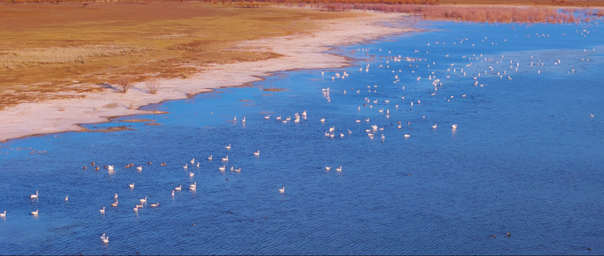

鄂尔多斯遗鸥国家级自然保护区
Erdos Gull National Nature Reserve
鄂尔多斯遗鸥国家级自然保护区地处内蒙古鄂尔多斯市中部，位于东胜市和伊金霍洛旗境内，东经109°14′～109°23′，北纬33°25′～34°00′之间，总面积为14770公顷。保护区建立于1998年，2001年晋升为国家级自然保护区，属于高原内陆湿地生态类型自然保护区，主要保护对象是遗鸥繁殖地及内陆湖泊。2002年被《国际湿地公约》执委会评为全球第1148号国际重要湿地，这也是全球范围内第一个以保护遗鸥及其栖息地湿地生境为主旨的国际重要湿地。
鄂尔多斯遗鸥国家级自然保护区是遗鸥鄂尔多斯种群最集中的分布区和最主要的繁殖地。鄂尔多斯遗鸥国家级自然保护区主要保护对象是以遗鸥为主的83种鸟类繁殖地及内陆湖泊。遗鸥是保护区内主要保护对象。遗鸥属鸥形目鸥科，体长430～460毫米。虹膜黑色，眼周白色，嘴和脚暗红色。栖于草原、沙漠和半荒漠的湖泊和沼泽地。
截至2011年，鄂尔多斯遗鸥国家级自然保护区有湿地鸟类83种，属国家一级保护物种有遗鸥、东方白鹳、白尾海雕，属国家二级保护的物种有角鸊鷉、赤颈鸊鷉、白琵鹭、大天鹅、鸢、大鵟、红脚隼、蓑羽鹤、苍鹰、黑浮鸥等10多种。
